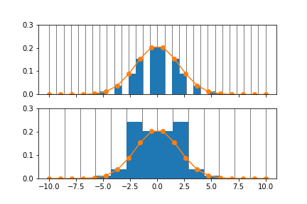

Abins: Implementation details#
Introduction#
Abins is a relatively complex algorithm with some unique infrastructure and built-in design decisions. Details are collected here: this is primarily for the benefit of those developing or hacking Abins.
Deprecation plans#
Support for VASP OUTCAR files is currently included for validation and troubleshooting purposes. Users are recommended to use the vasprun.xml file input.
The pkt_per_peak and fwhm parameters in
abins.parameters.samplingare no longer in use and should be removed in a future release.The frequencies_threshold parameter in
abins.parameters.samplingis currently non-functional and should be removed until it is functional.
Sampling#
While the scattering cross-sections are calculated for individual events and enumerated combinations of events, the output spectra are histograms which have been resampled and broadened on a finite grid.
The data range is determined by three parameters:
min_wavenumber, set in
abins.parameters.samplingmax_wavenumber, set in
abins.parameters.samplingbin_width, a parameter set in the main Abins algorithm interface and passed as an argument to internal functions as appropriate. This parameter is more exposed than the energy range, as a convenient to the user. However, it should be applied consistently within a single application of Abins and functions may assume that this value was also used elsewhere.
These parameters are used to establish the edges of the sample bins; the largest value is rounded up from max_wavenumber to contain a whole number of bin_width.
The histogram of data sampled in these N bins has N-1 “points”, which should be aligned with the corresponding bin centres if plotted as a line. In the code this array of frequency coordinates is generally named freq_points.
Broadening#
Instrumental broadening in Abins involves an energy-dependent resolution function; in the implemented case (the TOSCA instrument) this is convolution with a Gaussian kernel with the energy-dependent width parameter (sigma) determined by a quadratic polynomial. Convolution with a varying kernel is not a common operation and is implemented within abins.
Earlier versions of Abins implemented a Gaussian kernel with a
fixed number of points spread over a range scaled to the peak width,
set by pkt_per_peak and fwhm parameters in
abins.parameters.sampling.
This method leads to aliasing when the x-coordinates are
incommensurate with the histogram spacing, and an uneven number of
samples falls into each bin.

The safest way to avoid such trouble is for all broadening methods to
output onto the regular freq_points grid. A number of broadening
implementations have been provided in
abins.instruments.broadening. It is up to the Instrument
logic to dispatch broadening calls to the requested implementation,
and it is up to specific Instruments to select an appropriate scheme
for their needs.
The advanced parameter abins.parameters.sampling[‘broadening_scheme’]
is made available so that this can be overruled, but it is up to the
Instrument to interpret this information. ‘auto’ should select an
intelligent scheme and inappropriate methods can be forbidden.
A fast, possibly-novel method of frequency-dependent broadening has been implemented as the ‘interpolate’ method. For notes on this method and its limitations see Abins: Fast approximate broadening with “interpolate”.
Testing#
Tests for Abins are located in a few places:
Unit tests#
Unit tests for the Python abins modules are in scripts/test/Abins.
These are set up with the other unit tests (cmake --build . --target AllTests)
and can be run by filtering for Abins (ctest -R Abins).
This will also run the Algorithm tests (next section).
Some of these tests load input data and check that the
structure/vibration data has been read correctly. There is a
consistent framework for this type of test established in
abins.input.tester and inherited by
code-specific tests e.g. AbinsLoadGAUSSIANTest. To create a new
reference data file with a specific build of Abins, instantiate a
Loader and pass it to save_ab_initio_test_data. This takes two lines of Python, e.g.:
reader = abins.input.CRYSTALLoader(input_ab_initio_filename='my_calc.out')
abins.input.Tester.save_ab_initio_test_data(reader, 'my_new_test')
which will write the necessary my_new_test_data.txt file and my_new_test_atomic_displacements_data_{k}.txt files for each phonon wavevector.
Algorithm tests#
Tests of the main Abins algorithm and of the advanced parameter settings are in Framework/PythonInterface/test/python/plugins/algorithms. These mostly cover input sanity-checking, and check the consistency of result scaling and splitting into atomic contributions.
System tests#
System tests are defined in Testing/SystemTests/tests/framework/AbinsTest.py. These tests compare the output workspaces of Abins runs with reference Nexus files, using the standard setup described in the main developer docs. The reference data will need to be changed when major updates to Abins impact the output results; the simplest way to obtain the new reference files is to run the system tests, which will save Nexus files from the failed system tests. These should be inspected to verify that all changes were expected and understood as consequences of changes to Abins.
Category: Concepts